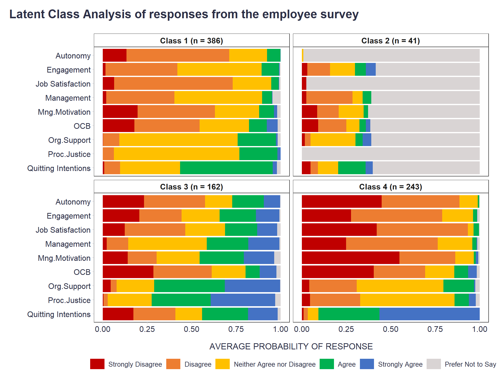

How listening to a podcast about conspiracies and disinformation inspired me to try out a “new” statistical tool popular among sociologists.
I recently listened to a podcast about a very interesting study about conspiracies and disinformation in Czech society, and one of the authors of the study, Matous Pilnacek, a sociologist, spoke very enthusiastically and positively during the interview about the analytical possibilities offered by Latent Class Analysis (LCA).
Not being a sociologist, among whom this tool is well-known, I was quite easily impressed and hooked üôÇ LCA allows probabilistic modeling of multivariate categorical data with the assumption that there are latent classes of people who are characterized by a common pattern of probabilities of responses to a set of questions on some categorical, e.g.¬†Likert scale.
LCA is thus a natural fit for identifying subgroups of people with similar work views. Compared to other methods used in this context, such as Factor Analysis, k-means, or hierarchical clustering, it has several advantages:
What follows, is a a small demonstration of this tool on artificial employee survey data accompanying the book Predictive HR Analytics: Mastering the HR Metric by Edwards & Edwards (2019). It contains the survey responses of 832 employees on a 1 ‘strongly disagree’ to 5 ‘strongly agree’ response scale for a following set of statements.
# uploading libraries
library(readxl)
library(DT)
library(tidyverse)
# uploading legend to the data
legend <- readxl::read_excel("./surveyResults.xls", sheet = "Legend")
# user-friendly table with individual survey items
DT::datatable(
legend %>% dplyr::mutate(Scale = as.factor(Scale)),
class = 'cell-border stripe',
filter = 'top',
extensions = 'Buttons',
fillContainer = FALSE,
rownames= FALSE,
options = list(
pageLength = 5,
autoWidth = TRUE,
dom = 'Bfrtip',
buttons = c('copy'),
scrollX = TRUE,
selection="multiple"
)
)Before moving on to modeling, we first need to wrangle the data a bit - select the relevant variables, change their data type, and replace missing values with “Prefer Not to Say” reply category.
# uploading data
data <- readxl::read_excel("./surveyResults.xls", sheet = "Data")
# preparing the data for modeling
mydata <- data %>%
dplyr::select(-sex:-ethnicity) %>%
dplyr::mutate_all(as.character) %>%
replace(is.na(.), "Prefer Not to Say") %>%
dplyr::mutate_all(factor, levels = c("1", "2", "3", "4", "5", "Prefer Not to Say"))Now we can proceed with the modeling. For this we will use poLCA R package. One of the parameters to be set is the expected number of classes. To choose the right number, we need to fit several LCA models with different numbers of classes and, based on information criteria such as BIC or AIC, choose the model with the best balance between model complexity and good fit to the data. Here, I set the parameter to the best value I determined earlier.
# uploading library
library(poLCA)
# specifying and running the model
set.seed(1234)
lca_model <- poLCA::poLCA(
cbind(ManMot1, ManMot2, ManMot3, ManMot4, ocb1, ocb2, ocb3, ocb4, aut1, aut2, aut3, Justice1, Justice2, Justice3, JobSat1, JobSat2, Quit1, Quit2, Quit3, Man1, Man2, Man3, Eng1, Eng2, Eng3, Eng4, pos1, pos2, pos3)~1,
data = mydata,
nclass = 4,
nrep = 3,
verbose = FALSE,
graphs = FALSE
)Let’s check some of the outputs of the analysis: 1) probability of responses to individual items by people from different classes,
# looking at the model output
lca_modelConditional item response (column) probabilities,
by outcome variable, for each class (row)
$ManMot1
Pr(1) Pr(2) Pr(3) Pr(4) Pr(5) Pr(6)
class 1: 0.1350 0.4245 0.3092 0.0875 0.0227 0.0211
class 2: 0.0732 0.1220 0.1463 0.0244 0.0000 0.6341
class 3: 0.0906 0.1342 0.2384 0.2976 0.2021 0.0371
class 4: 0.4765 0.3591 0.1274 0.0121 0.0132 0.0118
$ManMot2
Pr(1) Pr(2) Pr(3) Pr(4) Pr(5) Pr(6)
class 1: 0.3345 0.4531 0.1377 0.0534 0.0081 0.0132
class 2: 0.1220 0.1463 0.0976 0.0244 0.0000 0.6098
class 3: 0.2274 0.2580 0.2239 0.1508 0.1033 0.0366
class 4: 0.7507 0.1967 0.0325 0.0080 0.0121 0.0000
$ManMot3
Pr(1) Pr(2) Pr(3) Pr(4) Pr(5) Pr(6)
class 1: 0.1180 0.3715 0.3610 0.1077 0.0209 0.0209
class 2: 0.0732 0.0732 0.2195 0.0000 0.0000 0.6341
class 3: 0.1005 0.1045 0.2517 0.3043 0.2019 0.0371
class 4: 0.4354 0.3590 0.1482 0.0252 0.0201 0.0121
$ManMot4
Pr(1) Pr(2) Pr(3) Pr(4) Pr(5) Pr(6)
class 1: 0.1965 0.4915 0.1830 0.0853 0.0225 0.0212
class 2: 0.0732 0.1463 0.0976 0.0488 0.0000 0.6341
class 3: 0.1437 0.1539 0.2503 0.2418 0.1798 0.0305
class 4: 0.5329 0.3401 0.1070 0.0000 0.0121 0.0078
$ocb1
Pr(1) Pr(2) Pr(3) Pr(4) Pr(5) Pr(6)
class 1: 0.3092 0.4552 0.1880 0.0344 0.0026 0.0105
class 2: 0.1463 0.1707 0.0732 0.0000 0.0000 0.6098
class 3: 0.4200 0.3895 0.1463 0.0135 0.0122 0.0185
class 4: 0.6336 0.2680 0.0592 0.0272 0.0000 0.0120
$ocb2
Pr(1) Pr(2) Pr(3) Pr(4) Pr(5) Pr(6)
class 1: 0.1645 0.4304 0.3103 0.0577 0.0131 0.0240
class 2: 0.0732 0.1707 0.1463 0.0000 0.0000 0.6098
class 3: 0.2486 0.4233 0.2233 0.0617 0.0246 0.0185
class 4: 0.3427 0.3929 0.1963 0.0403 0.0121 0.0156
$ocb3
Pr(1) Pr(2) Pr(3) Pr(4) Pr(5) Pr(6)
class 1: 0.1373 0.3711 0.3566 0.0869 0.0293 0.0188
class 2: 0.0732 0.1707 0.0732 0.0488 0.0244 0.6098
class 3: 0.2291 0.3319 0.2798 0.0853 0.0493 0.0246
class 4: 0.3206 0.3222 0.2333 0.0647 0.0396 0.0196
$ocb4
Pr(1) Pr(2) Pr(3) Pr(4) Pr(5) Pr(6)
class 1: 0.0971 0.2143 0.2582 0.2185 0.1988 0.0131
class 2: 0.0732 0.1220 0.0000 0.0976 0.0732 0.6341
class 3: 0.2431 0.1670 0.1081 0.1557 0.2955 0.0307
class 4: 0.3205 0.1708 0.1708 0.1759 0.1459 0.0162
$aut1
Pr(1) Pr(2) Pr(3) Pr(4) Pr(5) Pr(6)
class 1: 0.1914 0.6010 0.1600 0.0476 0.0000 0
class 2: 0.0000 0.0000 0.0000 0.0000 0.0000 1
class 3: 0.3128 0.3342 0.1095 0.1765 0.0671 0
class 4: 0.5015 0.4326 0.0659 0.0000 0.0000 0
$aut2
Pr(1) Pr(2) Pr(3) Pr(4) Pr(5) Pr(6)
class 1: 0.0892 0.5412 0.2574 0.1121 0.0000 0
class 2: 0.0000 0.0000 0.0000 0.0000 0.0000 1
class 3: 0.1521 0.3402 0.1754 0.2164 0.1159 0
class 4: 0.4131 0.4234 0.1476 0.0160 0.0000 0
$aut3
Pr(1) Pr(2) Pr(3) Pr(4) Pr(5) Pr(6)
class 1: 0.1199 0.5929 0.2172 0.0674 0.0025 0.0000
class 2: 0.0000 0.0000 0.0244 0.0000 0.0000 0.9756
class 3: 0.2286 0.3560 0.1749 0.1426 0.0918 0.0061
class 4: 0.4325 0.4548 0.0964 0.0082 0.0000 0.0081
$Justice1
Pr(1) Pr(2) Pr(3) Pr(4) Pr(5) Pr(6)
class 1: 0.0000 0.0782 0.7351 0.1756 0.0110 0.0000
class 2: 0.0000 0.0000 0.0000 0.0000 0.0000 1.0000
class 3: 0.0061 0.0190 0.2754 0.3353 0.3398 0.0245
class 4: 0.0526 0.3241 0.5002 0.0742 0.0247 0.0242
$Justice2
Pr(1) Pr(2) Pr(3) Pr(4) Pr(5) Pr(6)
class 1: 0.0000 0.0759 0.7355 0.1788 0.0099 0.0000
class 2: 0.0000 0.0000 0.0000 0.0000 0.0000 1.0000
class 3: 0.0061 0.0190 0.2458 0.3396 0.3528 0.0367
class 4: 0.0445 0.2954 0.5556 0.0463 0.0380 0.0202
$Justice3
Pr(1) Pr(2) Pr(3) Pr(4) Pr(5) Pr(6)
class 1: 0.0000 0.0332 0.6473 0.2877 0.0318 0.0000
class 2: 0.0000 0.0000 0.0000 0.0000 0.0000 1.0000
class 3: 0.0000 0.0305 0.2225 0.3209 0.3956 0.0305
class 4: 0.0404 0.2239 0.5407 0.1179 0.0569 0.0202
$JobSat1
Pr(1) Pr(2) Pr(3) Pr(4) Pr(5) Pr(6)
class 1: 0.0749 0.7008 0.1795 0.0298 0.0053 0.0097
class 2: 0.0244 0.0000 0.0000 0.0000 0.0000 0.9756
class 3: 0.1355 0.3993 0.1967 0.1263 0.1220 0.0202
class 4: 0.4703 0.4749 0.0267 0.0242 0.0000 0.0041
$JobSat2
Pr(1) Pr(2) Pr(3) Pr(4) Pr(5) Pr(6)
class 1: 0.0527 0.6334 0.2540 0.0546 0.0000 0.0053
class 2: 0.0244 0.0000 0.0000 0.0000 0.0000 0.9756
class 3: 0.1100 0.2836 0.2498 0.2345 0.1037 0.0183
class 4: 0.3717 0.5498 0.0388 0.0356 0.0000 0.0040
$Quit1
Pr(1) Pr(2) Pr(3) Pr(4) Pr(5) Pr(6)
class 1: 0.0086 0.0503 0.3622 0.5410 0.0193 0.0185
class 2: 0.0488 0.0000 0.1463 0.1707 0.0244 0.6098
class 3: 0.1476 0.2228 0.1411 0.2832 0.1870 0.0182
class 4: 0.0103 0.0176 0.0660 0.3442 0.5619 0.0000
$Quit2
Pr(1) Pr(2) Pr(3) Pr(4) Pr(5) Pr(6)
class 1: 0.0076 0.1285 0.2897 0.5154 0.0378 0.0210
class 2: 0.0732 0.0732 0.0732 0.1463 0.0488 0.5854
class 3: 0.1804 0.2770 0.1514 0.2373 0.1476 0.0063
class 4: 0.0103 0.0356 0.0533 0.3251 0.5758 0.0000
$Quit3
Pr(1) Pr(2) Pr(3) Pr(4) Pr(5) Pr(6)
class 1: 0.0065 0.0874 0.365 0.5037 0.0137 0.0237
class 2: 0.0244 0.0488 0.122 0.1463 0.0488 0.6098
class 3: 0.1862 0.2099 0.159 0.2557 0.1649 0.0243
class 4: 0.0081 0.0179 0.058 0.3631 0.5529 0.0000
$Man1
Pr(1) Pr(2) Pr(3) Pr(4) Pr(5) Pr(6)
class 1: 0.0161 0.4123 0.4782 0.0434 0.0026 0.0474
class 2: 0.0244 0.2683 0.0732 0.0244 0.0000 0.6098
class 3: 0.0183 0.1371 0.4832 0.2147 0.1404 0.0062
class 4: 0.2745 0.5092 0.1949 0.0094 0.0000 0.0121
$Man2
Pr(1) Pr(2) Pr(3) Pr(4) Pr(5) Pr(6)
class 1: 0.0187 0.3700 0.4954 0.0661 0.0051 0.0448
class 2: 0.0244 0.2683 0.0244 0.0732 0.0000 0.6098
class 3: 0.0244 0.1232 0.4177 0.2329 0.1956 0.0062
class 4: 0.2381 0.5147 0.1917 0.0354 0.0081 0.0121
$Man3
Pr(1) Pr(2) Pr(3) Pr(4) Pr(5) Pr(6)
class 1: 0.0213 0.3718 0.5068 0.0536 0.0044 0.0422
class 2: 0.0244 0.2439 0.0732 0.0488 0.0000 0.6098
class 3: 0.0244 0.0998 0.4262 0.2522 0.1913 0.0062
class 4: 0.2341 0.5234 0.1969 0.0255 0.0040 0.0160
$Eng1
Pr(1) Pr(2) Pr(3) Pr(4) Pr(5) Pr(6)
class 1: 0.0100 0.3362 0.4682 0.1654 0.0158 0.0044
class 2: 0.0000 0.1463 0.1463 0.0732 0.0488 0.5854
class 3: 0.1709 0.2392 0.1777 0.2413 0.1526 0.0183
class 4: 0.2432 0.4776 0.2106 0.0551 0.0040 0.0094
$Eng2
Pr(1) Pr(2) Pr(3) Pr(4) Pr(5) Pr(6)
class 1: 0.0406 0.4844 0.4136 0.0581 0.0000 0.0032
class 2: 0.0732 0.1220 0.1463 0.0244 0.0488 0.5854
class 3: 0.2601 0.2988 0.1498 0.1815 0.1098 0.0000
class 4: 0.3312 0.5015 0.1391 0.0088 0.0000 0.0193
$Eng3
Pr(1) Pr(2) Pr(3) Pr(4) Pr(5) Pr(6)
class 1: 0.0043 0.4245 0.5074 0.0572 0.0000 0.0065
class 2: 0.0244 0.0976 0.1463 0.0732 0.0732 0.5854
class 3: 0.1887 0.2142 0.2704 0.1802 0.1403 0.0061
class 4: 0.2442 0.5647 0.1576 0.0151 0.0000 0.0183
$Eng4
Pr(1) Pr(2) Pr(3) Pr(4) Pr(5) Pr(6)
class 1: 0.0026 0.3724 0.5065 0.1117 0.0026 0.0044
class 2: 0.0244 0.1463 0.1220 0.0732 0.0488 0.5854
class 3: 0.2015 0.1987 0.2597 0.2117 0.1283 0.0000
class 4: 0.2870 0.5095 0.1824 0.0117 0.0000 0.0095
$pos1
Pr(1) Pr(2) Pr(3) Pr(4) Pr(5) Pr(6)
class 1: 0.0000 0.1046 0.6481 0.2241 0.0073 0.0160
class 2: 0.0000 0.0488 0.2195 0.0488 0.0732 0.6098
class 3: 0.0305 0.0479 0.1663 0.4436 0.3117 0.0000
class 4: 0.0728 0.2523 0.4393 0.1949 0.0127 0.0280
$pos2
Pr(1) Pr(2) Pr(3) Pr(4) Pr(5) Pr(6)
class 1: 0.0023 0.1124 0.6717 0.1952 0.0024 0.0159
class 2: 0.0244 0.0488 0.2439 0.0488 0.0244 0.6098
class 3: 0.0549 0.0313 0.2471 0.3795 0.2812 0.0061
class 4: 0.0289 0.2999 0.4990 0.1482 0.0000 0.0240
$pos3
Pr(1) Pr(2) Pr(3) Pr(4) Pr(5) Pr(6)
class 1: 0.0000 0.0608 0.6749 0.2278 0.0205 0.0159
class 2: 0.0244 0.0000 0.2927 0.0244 0.0488 0.6098
class 3: 0.0488 0.0180 0.2200 0.3711 0.3421 0.0000
class 4: 0.0202 0.2505 0.5242 0.1766 0.0086 0.0200
Estimated class population shares
0.4564 0.0493 0.197 0.2973
Predicted class memberships (by modal posterior prob.)
0.4639 0.0493 0.1947 0.2921
=========================================================
Fit for 4 latent classes:
=========================================================
number of observations: 832
number of estimated parameters: 583
residual degrees of freedom: 249
maximum log-likelihood: -29354.91
AIC(4): 59875.81
BIC(4): 62629.81
G^2(4): 47676.67 (Likelihood ratio/deviance statistic)
X^2(4): 1.120338e+25 (Chi-square goodness of fit)
# probabilities of belonging to individual classes (first 10 rows)
head(lca_model$posterior, n = 10) [,1] [,2] [,3] [,4]
[1,] 1.705863e-01 0 1.088439e-08 8.294137e-01
[2,] 1.208337e-02 0 9.879166e-01 0.000000e+00
[3,] 4.990889e-13 0 1.000000e+00 0.000000e+00
[4,] 9.999903e-01 0 9.649316e-06 6.879833e-09
[5,] 0.000000e+00 1 0.000000e+00 0.000000e+00
[6,] 9.988548e-01 0 3.805196e-06 1.141380e-03
[7,] 1.782575e-13 0 1.000000e+00 0.000000e+00
[8,] 0.000000e+00 0 1.000000e+00 0.000000e+00
[9,] 1.272725e-04 0 1.104259e-11 9.998727e-01
[10,] 1.064019e-09 0 1.000000e+00 1.215934e-244and 3) predicted belongings of people to the classes.
# predicted belongings to the classes
lca_model$predclass [1] 4 3 3 1 2 1 3 3 4 3 1 1 1 4 4 1 1 1 4 1 1 1 3 4 2 3 4 1 4 3 1 4
[33] 3 1 4 3 3 1 3 3 4 4 1 1 3 1 4 1 1 3 1 3 4 1 1 2 1 4 3 1 3 1 4 3
[65] 4 1 4 3 4 1 1 1 4 3 2 4 1 1 4 1 3 3 1 4 1 4 1 3 4 4 4 4 1 1 1 4
[97] 4 1 3 1 3 3 1 4 1 4 3 3 1 2 1 1 4 1 4 1 4 1 4 4 1 4 3 1 4 1 1 3
[129] 1 1 4 4 4 4 4 1 4 3 1 1 3 1 1 1 1 1 4 3 1 3 4 1 4 3 1 1 1 1 3 3
[161] 1 1 1 4 1 1 3 1 1 1 4 3 3 1 1 1 1 1 1 3 1 3 1 1 4 4 3 4 1 4 3 3
[193] 3 3 4 1 4 2 3 4 4 3 1 4 1 4 4 4 4 3 3 1 4 1 4 3 1 3 4 1 1 4 4 1
[225] 4 1 4 4 1 4 4 4 3 4 1 1 4 1 3 1 4 1 4 1 3 4 3 1 1 1 4 1 1 1 4 1
[257] 4 1 1 1 1 3 1 1 4 1 1 1 4 1 1 1 1 1 3 4 4 1 1 4 4 3 4 3 1 3 1 3
[289] 1 2 4 4 3 4 1 4 4 1 1 1 1 1 4 1 4 3 1 1 4 1 1 3 1 4 1 4 1 4 1 4
[321] 4 4 1 4 1 4 3 4 4 1 1 4 4 2 4 1 1 1 1 4 1 4 3 1 4 4 4 1 1 4 3 2
[353] 4 1 4 3 3 1 4 4 3 2 4 1 1 1 4 1 2 1 1 4 1 1 1 1 4 1 1 1 1 2 4 1
[385] 1 1 2 1 1 3 4 1 1 3 1 4 1 1 1 2 1 1 4 1 3 2 1 1 3 1 4 4 1 1 1 1
[417] 1 1 4 4 4 1 1 3 1 1 4 3 1 1 1 1 1 4 1 2 1 4 4 1 1 1 1 1 2 1 4 2
[449] 1 4 1 3 1 1 3 4 3 1 1 3 4 4 4 4 4 3 1 4 1 1 3 3 3 1 1 3 1 4 3 1
[481] 1 1 1 4 4 2 1 3 1 1 1 4 4 1 3 1 1 3 1 1 1 1 3 4 4 4 3 1 1 1 4 3
[513] 4 1 1 4 1 1 1 4 2 1 4 1 4 1 3 1 3 2 4 2 3 4 1 1 4 4 4 1 3 1 4 1
[545] 1 1 4 3 1 4 4 4 1 3 1 2 1 1 3 4 2 3 2 1 1 1 1 4 4 2 1 3 1 4 1 3
[577] 4 3 3 4 1 4 1 2 4 3 1 1 1 1 1 1 3 4 4 1 4 1 1 4 1 1 1 4 1 4 1 1
[609] 3 1 3 1 1 3 4 4 3 1 4 1 3 4 1 1 4 1 4 4 4 1 3 4 2 4 1 1 1 4 1 4
[641] 1 1 1 1 1 3 1 3 1 1 3 1 1 4 1 4 3 1 4 1 2 2 1 3 4 3 1 4 2 3 4 1
[673] 3 3 4 3 1 1 1 1 4 1 1 3 1 3 1 1 3 1 1 1 1 1 1 3 2 1 1 1 4 1 4 4
[705] 4 1 1 1 1 1 1 3 4 3 4 1 3 1 1 1 2 3 3 3 3 3 4 3 1 1 1 3 3 1 3 2
[737] 1 2 3 1 4 1 4 2 3 1 1 4 3 1 3 4 3 4 1 4 1 1 3 4 4 4 3 1 1 2 1 1
[769] 1 1 4 3 3 4 4 1 3 4 2 4 4 3 3 1 3 1 2 4 1 1 3 1 4 3 4 1 1 1 4 1
[801] 2 1 4 1 4 4 4 1 1 4 1 4 4 4 2 4 4 3 4 1 1 3 1 3 3 1 1 4 4 3 3 1# checking the size of the classes
table(lca_model$predclass)
1 2 3 4
386 41 162 243 If we wanted to visualize the results using our own charts, for example, with full-stacked bar charts showing average probability of responses per scale and class, we need to do some data wrangling of information extracted from the fitted model.
# extracting information from the model for dataviz
scaleNames <- mydata %>% names()
classes <- 4
responsesDf <- data.frame()
for(s in scaleNames){
df <- data.frame()
counter <- 1
for(v in 1:length(lca_model$probs[[s]])){
p <- lca_model$probs[[s]][v]
cl <- paste0("Class ", counter)
supp <- data.frame(item = s, class = cl, p = p)
df <- rbind(df, supp)
if(counter < classes){
counter <- counter + 1
} else{
counter <- 1
}
}
df <- df %>%
dplyr::mutate(choice = rep(c("Strongly Disagree","Disagree","Neither Agree nor Disagree","Agree","Strongly Agree","Prefer Not to Say"), each=classes))
responsesDf <- rbind(responsesDf, df)
}
# computing size of individual classes
classCnts <- table(lca_model$predclass) %>%
as.data.frame() %>%
dplyr::mutate(
Var1 = as.character(Var1),
Var1 = paste0("Class ", Var1)
) %>%
dplyr::rename(
class = Var1,
freq = Freq
)
# final df for dataviz
datavizDf <- responsesDf %>%
dplyr::mutate(
scale = stringr::str_remove_all(item, "\\d"),
choice = factor(choice, levels = c("Strongly Disagree","Disagree","Neither Agree nor Disagree","Agree","Strongly Agree","Prefer Not to Say"), ordered = TRUE),
scale = case_when(
scale == "aut" ~ "Autonomy",
scale == "Eng" ~ "Engagement",
scale == "JobSat" ~ "Job Satisfaction",
scale == "Justice" ~ "Proc.Justice",
scale == "Man" ~ "Management",
scale == "ManMot" ~ "Mng.Motivation",
scale == "ocb" ~ "OCB",
scale == "pos" ~ "Org.Support",
scale == "Quit" ~ "Quitting Intentions"
)
) %>%
dplyr::group_by(scale, class, choice) %>%
dplyr::summarise(p = mean(p)) %>%
dplyr::ungroup() %>%
dplyr::left_join(classCnts, by = "class") %>%
dplyr::mutate(class = stringr::str_glue("{class} (n = {freq})"))In the resulting graphs, we quickly see that there is one class of people who often prefer not to give their opinion in an employee survey (Class 2), one class of people with a strongly negative view of their employment experience (Class 4), one class of people with a neutral to slightly negative view of work (Class 1), and one class of people with a neutral to positive view of work (Class 3).
# dataviz
datavizDf %>%
ggplot2::ggplot(aes(x = scale, y = p, fill = choice)) +
ggplot2::scale_x_discrete(limits = rev) +
ggplot2::geom_bar(stat = "identity", position = position_fill(reverse = TRUE)) +
ggplot2::scale_fill_manual(values = c("Strongly Disagree"="#c00000","Disagree"="#ed7d31","Neither Agree nor Disagree"="#ffc000","Agree"="#00b050","Strongly Agree"="#4472c4","Prefer Not to Say"="#d9d4d4")) +
ggplot2::coord_flip() +
ggplot2::facet_wrap(~class,nrow = 2) +
ggplot2::labs(
x = "",
y = "AVERAGE PROBABILITY OF RESPONSE",
fill = "",
title = "Latent Class Analysis of responses from the employee survey"
) +
ggplot2::theme_bw() +
ggplot2::theme(
plot.title = element_text(color = '#2C2F46', face = "bold", size = 18, margin=margin(0,0,20,0)),
plot.subtitle = element_text(color = '#2C2F46', face = "plain", size = 15, margin=margin(0,0,20,0)),
plot.caption = element_text(color = '#2C2F46', face = "plain", size = 11, hjust = 0),
axis.title.x.bottom = element_text(margin = margin(t = 15, r = 0, b = 0, l = 0), color = '#2C2F46', face = "plain", size = 13),
axis.title.y.left = element_text(margin = margin(t = 0, r = 15, b = 0, l = 0), color = '#2C2F46', face = "plain", size = 13),
axis.text = element_text(color = '#2C2F46', face = "plain", size = 12, lineheight = 16),
strip.text = element_text(size = 12, face = "bold"),
strip.background = element_rect(fill = "white"),
axis.ticks = element_line(color = "#E0E1E6"),
legend.position= "bottom",
legend.key = element_rect(fill = "white"),
legend.key.width = unit(1.6, "line"),
legend.margin = margin(0,0,0,0, unit="cm"),
legend.text = element_text(color = '#2C2F46', face = "plain", size = 10, lineheight = 16),
legend.box.margin=margin(0,0,0,0),
panel.background = element_blank(),
panel.grid.major.y = element_blank(),
panel.grid.major.x = element_blank(),
panel.grid.minor = element_blank(),
plot.margin=unit(c(5,5,5,5),"mm"),
plot.title.position = "plot",
plot.caption.position = "plot",
) +
ggplot2::guides(fill = guide_legend(nrow = 1))
It would certainly be possible to delve deeper into the results, but for a basic overview of the process of LCA and its outputs, this might be sufficient. If interested, a more detailed introduction to LCA can be found, for example, in this practitioner’s guide.